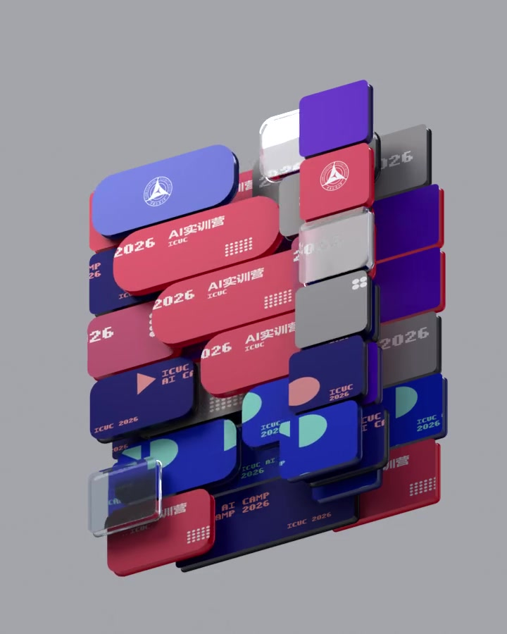

从一个想法出发，做出真正属于你的作品。
你会练习提出问题、筛选资料、组织故事、统一画面与声音，并在制作中判断AI生成内容是否准确、合适。工具可以帮你加速，但主题、审美和最后的选择仍由你决定。
你将练习：研究 × 叙事 × 视听创作 × 互动发布
中国传媒大学国际传媒教育学院 · 2026秋季学期
从寻找资料、构思故事，到设计角色、制作影像与声音，再把作品放进自己的网站。每一次练习，都在为期末作品添上一块拼图。

会用 AI，只是起点。成为能实现想法的超级个体，才是目标。
文案、图像、音乐和视频，都是表达想法的工具。五门课将带你学习如何提出问题、判断方向、组织创作，并把每一份课堂练习积累成最终作品，让 AI 真正放大你的创造力。
这门实训营会带你走过一个完整的创作过程：研究主题、讲好故事、建立视觉风格、完成影像与声音，并把作品发布出来。
你会练习提出问题、筛选资料、组织故事、统一画面与声音，并在制作中判断AI生成内容是否准确、合适。工具可以帮你加速，但主题、审美和最后的选择仍由你决定。
你会围绕同一个主题持续创作。每门课都贡献新的内容，期末再把文字、视觉、3D、影像、声音和网站整理成一个完整项目。
YOUR WORK
YOUR PROCESS
建议从第一节课起保存草稿、反馈、素材来源和修改记录。它们能帮你复盘，也能成为作品集的一部分。
你关注什么问题，为什么选择这个故事或方向？
让观众看到你如何从资料走向角色、场景与视听风格。
展示成片、声音、网站以及最能代表你想法的设计。
分享修改过什么、解决了什么问题，以及下一步想继续做什么。
你不用等到最后一周才开始做大项目。课堂练习会逐步积累成阶段成果，再组合成完整作品。
可能是一段研究摘要、一张角色草图、一次镜头测试、一段配音或一个网页模块。先把这一小步做好，再带到下一节课继续用。
把这一门课的练习整理起来，留下初稿、修改稿和最终稿。你会更清楚地看见自己的想法如何成形。
把同一主题下的剧本、角色与场景、影像、声音、网站及衍生设计整理成一个可以向别人完整介绍的项目。
同一个主题会在五门课里不断长大：先找到内容，再建立画面、声音和互动呈现。
课程计划从2026年10月11日（周日）开始，到2027年1月10日（周日）结束，共15个教学日、29个教学单元。授课采用线下＋线上方式；线下授课仅面向中国传媒大学本校生。具体日期与课程可以在下方课表中查看。

手机上可左右滑动查看完整课表。后续如有调整，请以学院正式通知为准。
点击课程名称，看看每门课会做什么、可以形成哪些作品，以及对应的上课日期与主题。
学习寻找和分析资料，确定创作主题，再把研究发现变成故事与角色的起点。
从IP设计原理出发，用AI设计角色、场景和道具，进一步尝试文创衍生品、3D制作与Vibe Coding网站设计。
从分镜和镜头测试开始，把剧本、角色与场景做成能播放的动态影像。
学习音乐可视化、AI配音、音效与配乐：用Gemini制作互动网页，再为动画片段完成声音设计与综合Demo。
学习借助AI完成网页与互动功能，把前面课程的作品整合进个人展示网站。
下面六类内容可以帮助你整理一个完整项目。建议围绕同一个主题创作，让故事、画面、声音和展示方式彼此呼应。
研究基础、故事梗概、世界观、角色小传、场景描述和完整剧本。
主要角色、关键场景、必要道具及视觉风格说明。
建议为2—5分钟的短视频、动画短片或微电影，并保留分镜和版本过程。
配音、主题音乐、音效和最终混音，并真正应用于影像或互动作品。
集中展示个人介绍、创作过程、阶段成果、最终作品和项目说明。
设计理念、应用场景、效果图，以及它与整体项目的关系。
完成作品之后，还要让别人看懂它。把同一个项目整理成影像、网站和图文作品集，可以在不同场景中介绍自己的创作。
用统一的主题、故事和视觉风格把五门课的成果连接起来，让观众看到你的创作想法。
用作品视频吸引观众，用个人网站集中展示，用图文作品集讲清研究与制作过程。
你可以继续完善角色与世界观，把作品用于个人作品集、线上分享或后续创作。
按时参加课程、完成各门课的正式作业与期末项目。下方列出证书和学分的评分构成；最终要求以学院正式通知为准。
按当前课程方案，总评达到60分及以上，所有正式作业须最迟于2027年2月21日提交，并经审核有效。截止日期之后提交的作业无效。最终以学院正式通知为准。
评分权重合计100%：考勤25%，五门课程各15%。正式作业全部提交是独立于总分之外的结业条件。
请最迟于这一天提交所有正式作业；2027年2月21日之后提交的作业无效。
别只保存最后的成片。一路上的参考资料、草稿、测试与修改，既能帮你回顾学习，也能让作品集更有说服力。
| 建议保存 | 它能帮你做什么 |
|---|---|
| 选题与参考资料 | 回看最初的想法，说明你的故事、角色与视觉方向从哪里来。 |
| 草稿与测试 | 展示你怎样尝试不同方案，并从中找到更适合的表达方式。 |
| 反馈与修改版本 | 记录解决问题的过程，让别人看到作品是怎样一步步变好的。 |
| 素材来源与AI使用 | 清楚说明使用了哪些资料、素材和工具，方便检查引用与使用权限。 |
| 最终文件与链接 | 把成片、图像、声音、网站地址和备份放在一起，方便展示与继续更新。 |
先熟悉课表，再用每周的小练习推进项目。为作品留出整理、修改和展示的时间。
从一个主题出发，用五门课程完成研究、视觉、影像、声音与网站，把创意做成可以展示的作品。